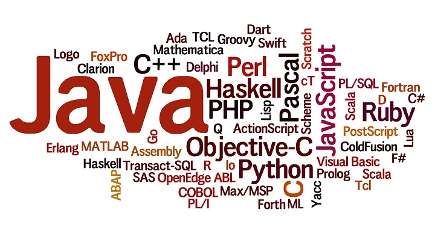

- JavaScript
- JavaScript is a core programming language for powering the World Wide Web. Its effectiveness in front- and back-end development, the ability to work well with other languages, versatility, and updated annually make it a widely used language.
- Python
- Python is considered one of the best programming languages that can be used for web and desktop applications, GUI-based desktop applications, machine learning, data science, and network servers.
- C
- C is designed specifically for use with the Windows OS and is part of the .Net framework. It is widely used by competitive programmers owing to the fact that it is extremely fast and stable.
- Java
- Java is one of the languages that is popular in large organizations thanks to it a number of use-cases and has long been the preferred go-to language for coding on Android. It is widely used in Android App Development.
- Go
- Also known as Golang, Go provides excellent support for multithreading and thus, it is being used by a majority of companies that rely heavily on distributed systems. Developed at Google, Go scales well to larger systems and can execute multiple processes at once.
- Perl
- Perl takes the best features from other languages, such as C, awk, sed, sh, and BASIC, among others. It is originally developed for text manipulation and now used for a wide range of tasks such as system administration, web development, network programming, GUI development, and more.
- Ruby
- Ruby is a scripting language that runs on a variety of platforms, such as Windows, Mac OS, and the various versions of UNIX. Everything in Ruby is an object except the blocks but there are replacements too for it i.e procs and lambda.
- Swift
- Swift can be friendly to new programmers. It is a safe, fast, and interactive programming language that integrates the best in modern language expertise with wisdom from the wider Apple engineering culture and the diverse contributions from its open-source community.
- Scala
- Scala combines functional programming with object-oriented programming, offering code complexity alongside concise notation for better coding and increased performance. It also combines the flexibility of Java-style interfaces with the power of classes. Think principled multiple-inheritance.
- PHP
- PHP programming language is basically used for developing web-based software applications and allows web developers to create dynamic content that interacts with databases. It is a must learning language for students and working professionals to become a Software Engineer especially when they are working in Web Development Domain.